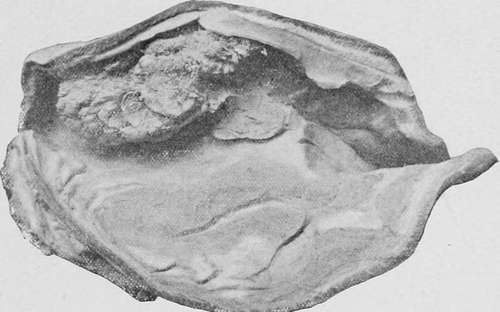
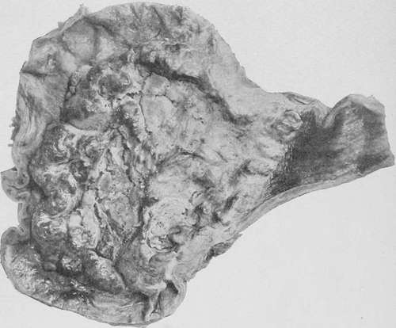
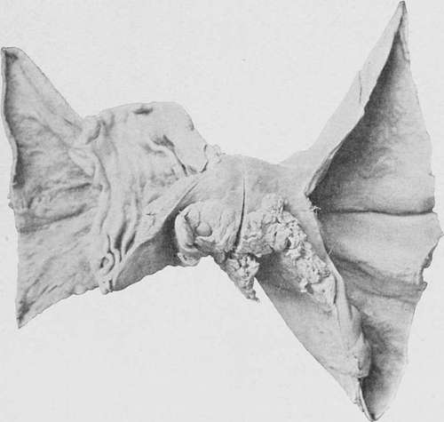
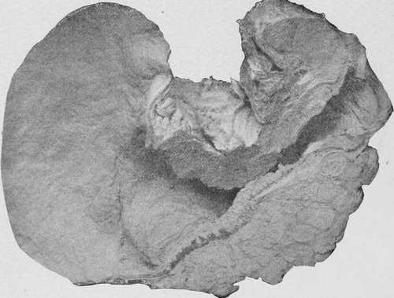
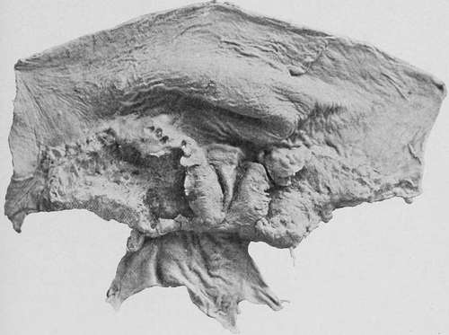
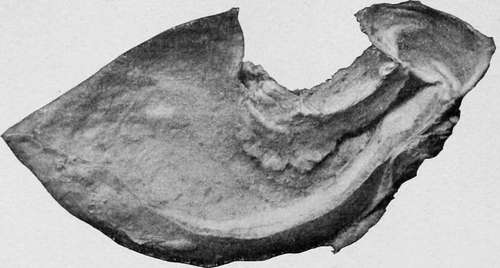
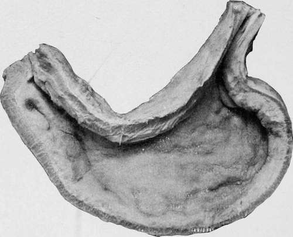
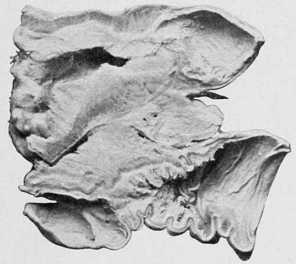

Adenocarcinoma (Cylindrical-Celled Carcinoma)
Description
This section is from the book "Cancer And Other Tumours Of The Stomach", by Samuel Fenwick. Also available from Amazon: Cancer and other tumours of the stomach.
Adenocarcinoma (Cylindrical-Celled Carcinoma)
This variety may occur in any part 01 the stomach, but is most common in the pyloric region.
(a) It usually presents itself in the form of a soft red fungoid tumour, which springs from a broad base and is sometimes studded with delicate papillae that give it a distinctly villous character. It usually possesses a firmer consistence than a medullary growth. On section it yields a milky juice, and appears to have grown by spreading itself over the surface of the stomach rather than by infiltrating the deeper layers.
Fig. 11.-, with a large villous growth projecting from the lesser curvature. Viewed from behind. (Museum of the Royal College of Surgeons.).
Owing to its remarkable vascularity, small haemorrhages are very prone to occur in its substance and to give the section a variegated red and brown appearance. The more extensive extravasations of blood are usually followed by sloughing of portions of the tumour and the production of deep ulcers, whose cavities are partially filled by fungoid outgrowths. Finally the entire mass may become gangrenous, and being detached may leave an irregular area of ulceration surrounded by a red projecting fungus-like wall. If the necrotic process involves the deeper coats of the stomach, perforation may ensue, but the aperture is often difficult to detect amid the proliferating tissue which composes the base of the sore.
(b) Occasionally the disease forms a girdle round the stomach in the pyloric or central region, in the same manner that it encircles the large intestine. In such cases the only external evidence of the neoplasm may consist of a shallow and opaque sulcus, which traverses the viscus at right angles to its long axis ; while internally the growth appears as a red fungating ring that divides the stomach into two sacs of unequal size. If the constriction occurs close to the pylorus, the general appearance of the stomach is similar to that met with in stenosis of the orifice (fig. 13).
(c) Like the preceding varieties, adenocarcinoma sometimes occurs as an infiltration of the walls of the organ, which commences near the pylorus and involves the greater portion of the viscus. In this condition the pylorus is usually thickened and rigid, and its orifice patent rather than contracted. The surface of the mucous membrane is uneven or distinctly nodular, and is often superficially ulcerated. When the entire stomach is infiltrated its tissues are greatly thickened, but its cavity is seldom reduced to the same extent as in diffuse scirrhus.
Fig. 12.-An enormous ulcerated fungoid growth of cylinder-celled carcinoma involving the greater part of the stomach and extending into the oesophagus. (Museum of the London Temperance Hospital.).
Fig. 13.-A cylindrical-celled growth at the centre of the stomach, dividing the organ into two sacs. (London Hospital Museum.).
4. Colloid Carcinoma (Mucous or Gum Cancer).-Each variety of carcinoma is liable to undergo a structural metamorphosis, whereby both its epithelial cells and connective tissue are converted into a gelatinous gum-like material termed ' colloid.'
This change may either occur after the growth has already existed for some time, and only partially affect the bulk of the tumour, or it may ensue almost simultaneously with the differentiation of the new elements, so that even the growing edge presents a gelatinous appearance. These facts help to explain the variations that occur in the naked-eye appearances of the disease in different cases.
(a) When the original growth has been more or less circumscribed, colloid carcinoma appears as a nodular mass of light brown colour and slimy consistence, which projects into the cavity of the stomach. The surface of the tumour is usually ulcerated, and the deeper tissues which are thereby exposed to view exhibit a honeycombed structure, the meshes of which are filled with granules of gelatinous substance. The base of the ulcer may consist of one of the coats of the stomach in a comparatively healthy state, or of hard scirrhous material; while, if the transformation has been more complete, nodules of colloid may be observed beneath the serous coat. In cases of medullary or adeno-carcinoma, where the greater part of the tumour has sloughed off, leaving an area of ulceration, the colloid change may be recognised by the presence of translucent granules, which project from the walls and everted edges of the ulcer (fig. 15).
Fig. 14.- Cylinder-celled carcinoma of the pylorus, giving rise to stenosis of the orifice. Viewed from behind. (Museum of the Royal College of Surgeons.).
(b) More commonly colloid takes the form of a diffuse infiltration, which involves the greater part of the stomach, and not infrequently spreads by direct continuity into the duodenum and oesophagus. In this condition the organ is somewhat contracted and its walls greatly thickened. The external surface is profusely studded with nodules, which vary in size from a millet-seed to a cobnut, and is more or less adherent to the large omentum and the surrounding viscera. On section the different coats appear to be replaced by a light-coloured fibrillar network, which encloses a quantity of transparent colourless or brown gelatinous material. The inner surface is usually nodular, and is often extensively, though superficially, ulcerated. The extreme fundus sometimes escapes when the rest of the organ is involved.
Fig. 15.-A malignant ulcer (spheroidal-cell) encircling the pylorus, which has undergone partial colloid degeneration. (London Hospital Museum.).
Fig. 16.-A stomach, viewed from behind, showing colloid carcinoma of the pylorus. (Museum of the Royal College of Surgeons.).
Fig. 17.-Colloid infiltration of the entire stomach. (Museum of the Royal College of Surgeons.).
This diffuse form is very apt to invade the peritoneum, and transform the omentum into an oblong thick mass profusely studded with colloid granules. The gastro-hepatic omentum is affected in a similar manner, and occasionally the disease spreads into the substance of the liver or pancreas. In other cases the general surface of the peritoneum becomes covered with colloid tumours of various sizes, which unite the intestines together, and may even completely fill the abdominal cavity.
Fig. 18.-. Specimen viewed from behind. (Museum of the Royal College of Surgeons.).
This form of carcinoma rarely gives rise either to haemorrhage or to perforation of the stomach.
Continue to:
- prev: Medullary Carcinoma (Soft Spheroidal-Celled Cancer)
- Table of Contents
- next: The Relative Frequency Of The Different Carcinomata